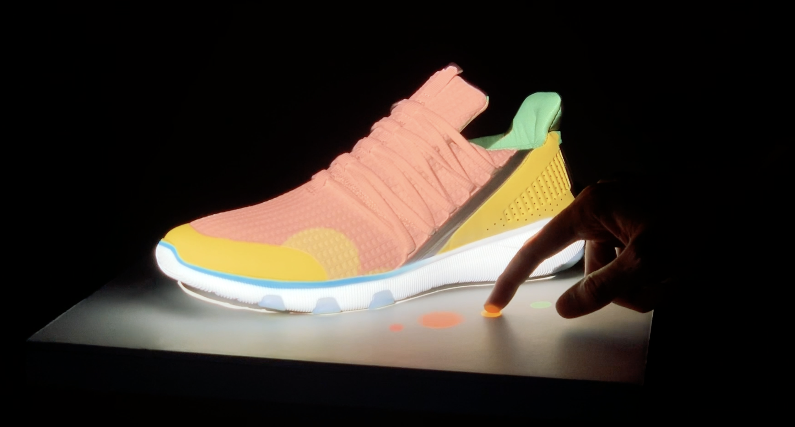
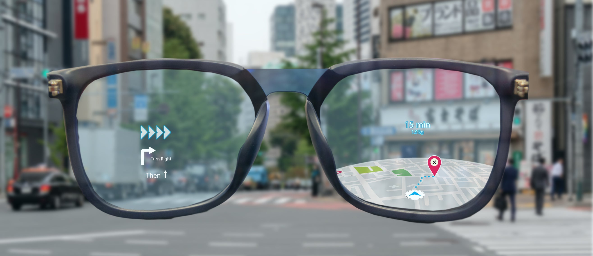

Augmented reality (AR) is an interactive experience of a real-world environment where the objects that reside in the real world are enhanced by computer-generated perceptual information, sometimes across multiple sensory modalities, including visual, auditory, haptic, somatosensory and olfactory.AR can be defined as a system that fulfills three basic features: a combination of real and virtual worlds, real-time interaction, and accurate 3D registration of virtual and real objects.
What is the Hardware required?
Hardware components for augmented reality are: a processor, display, sensors and input devices. Modern mobile computing devices like smartphones and tablet computers contain these elements, which often include a camera and microelectromechanical systems (MEMS) sensors such as an accelerometer, GPS, and solid state compass, making them suitable AR platforms. There are two technologies used in augmented reality: diffractive waveguides and reflective waveguides.
What are the display requirements?
A head-mounted display (HMD) is a display device worn on the forehead, such as a harness or helmet-mounted. HMDs place images of both the physical world and virtual objects over the user's field of view. Modern HMDs often employ sensors for six degrees of freedom monitoring that allow the system to align virtual information to the physical world and adjust accordingly with the user's head movements. HMDs can provide VR users with mobile and collaborative experiences.Specific providers, such as uSens and Gestigon, include gesture controls for full virtual immersion.
How can a projector be used?
Projectors can also be used to display AR contents. The projector can throw a virtual object on a projection screen and the viewer can interact with this virtual object. Projection surfaces can be many objects such as walls or glass panes.

How should the softwares be programmed?
A key measure of AR systems is how realistically they integrate augmentations with the real world. The software must derive real world coordinates, independent of camera, and camera images. That process is called image registration, and uses different methods of computer vision, mostly related to video tracking. Many computer vision methods of augmented reality are inherited from visual odometry. An augogram is a computer generated image that is used to create AR. Augography is the science and software practice of making augograms for AR.
How can Augmented Reality be used in Contact Lenses?
Contact lenses that display AR imaging are in development. These bionic contact lenses might contain the elements for display embedded into the lens including integrated circuitry, LEDs and an antenna for wireless communication. The first contact lens display was patented in 1999 by Steve Mann and was intended to work in combination with AR spectacles, but the project was abandoned, then 11 years later in 2010–2011.Another version of contact lenses, in development for the U.S. military, is designed to function with AR spectacles, allowing soldiers to focus on close-to-the-eye AR images on the spectacles and distant real world objects at the same time.
How will it work on Eyeglasses?
AR displays can be rendered on devices resembling eyeglasses. Versions include eyewear that employs cameras to intercept the real world view and re-display its augmented view through the eyepieces and devices in which the AR imagery is projected through or reflected off the surfaces of the eyewear lens pieces.
